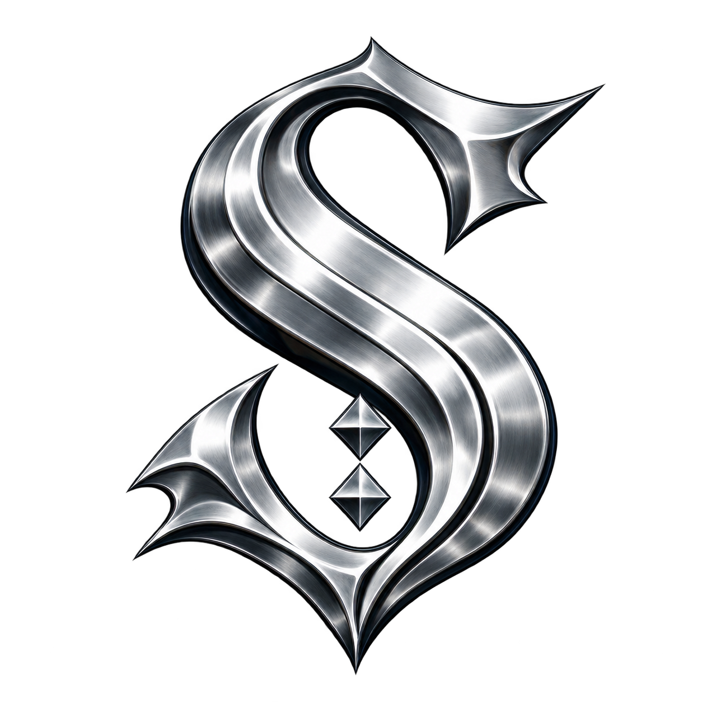

SYNTARION
SAGA OF SOTERIA
THE CONSTELLATION
CHARACTER PROGRESSION
The Constellation
Constellation
Class abilities
◈ Close the veil
3 DISCIPLINES
THE CELESTIAL ATLAS
What is given. What you make.
← All classes
✦
5
ABILITY POINTS AVAILABLE
−
100%
+
⊙